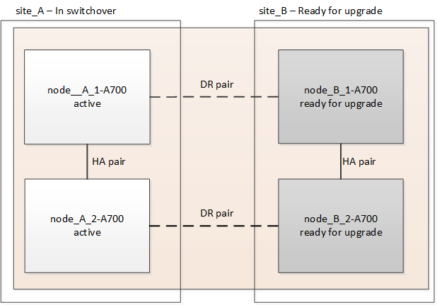

Solicitar cambios en el documento
Solicitar cambios en el documento Editar en GitHub
Editar en GitHub Guía del colaborador
Guía del colaboradorActualice controladoras de AFF A700/FAS9000 a AFF A900/FAS9500 en una configuración IP de MetroCluster mediante conmutación de sitios y conmutación de estado (ONTAP 9.10.1 o posterior).
Colaboradores
Puede utilizar la operación de conmutación de sitios de MetroCluster para proporcionar un servicio no disruptivo a los clientes mientras se actualizan los módulos de la controladora del clúster de partners. Como parte de este procedimiento, no se pueden actualizar otros componentes (como bandejas de almacenamiento o switches).
-
Para actualizar los módulos de controladoras A700 de AFF a AFF A900, las controladoras deben ejecutar ONTAP 9.10.1 o posterior.
-
Para actualizar los módulos de controladora FAS9000 a FAS9500, las controladoras deben ejecutar ONTAP 9.10.1P3 o una versión posterior.
-
Todas las controladoras de la configuración deben actualizarse durante el mismo período de mantenimiento.
No se admite el uso de la configuración de MetroCluster con un A700 de AFF y un AFF A900, o un FAS9000 y un controlador FAS9500 fuera de esta actividad de mantenimiento.
-
Los switches IP deben ejecutar una versión de firmware compatible.
-
Reutilizará las direcciones IP, las máscaras de red y las puertas de enlace de las plataformas originales en las nuevas plataformas.
-
En este procedimiento se utilizan los siguientes nombres de ejemplo, tanto en ejemplos como en gráficos:
-
Sitio_a
-
Antes de la actualización:
-
Node_a_1-A700
-
Node_a_2-A700
-
-
Después de la actualización:
-
Node_A_1-A900
-
Node_A_2-A900
-
-
-
Centro_B
-
Antes de la actualización:
-
Node_B_1-A700
-
Node_B_2-A700
-
-
Después de la actualización:
-
Node_B_1-A900
-
Node_B_2-A900
-
-
-
Flujo de trabajo para actualizar controladoras en una configuración de IP de MetroCluster
Puede usar el diagrama de flujo de trabajo como ayuda para planificar las tareas de actualización.

Prepare la actualización
Antes de realizar cambios en la configuración existente de MetroCluster, debe comprobar el estado de la configuración, preparar las nuevas plataformas y realizar otras tareas diversas.
Desactive la ranura 7 en las controladoras A700 o FAS9000 de AFF
La configuración de MetroCluster en un AFF A900 o FAS9500 utiliza uno de cada uno de los puertos de las tarjetas DR ubicadas en las ranuras 5 y 7. Antes de iniciar la actualización, si hay tarjetas en la ranura 7 en el A700 o FAS9000 de AFF, debe moverlas a otras ranuras para todos los nodos del clúster.
Actualice los archivos RCF del switch MetroCluster antes de actualizar las controladoras
Debe actualizar los archivos RCF en los conmutadores MetroCluster cuando realice esta actualización. La tabla siguiente muestra los intervalos VLAN compatibles con las configuraciones IP de MetroCluster A900/FAS9500 de AFF.
Modelo de plataforma |
ID de VLAN compatibles |
|
|
-
Si el conmutador no está configurado con la versión de archivo RCF mínima admitida, debe actualizar el archivo RCF. Para conocer la versión correcta del archivo RCF para su modelo de conmutador, consulte "Herramienta RcfFileGenerator". Los siguientes pasos son para la aplicación de archivos RCF.
-
Prepare los switches IP para la aplicación de los nuevos archivos RCF.
Siga los pasos de la sección correspondiente a su proveedor de switches desde el "Instalación y configuración de IP de MetroCluster" contenido.
-
Descargue e instale los archivos RCF.
Siga los pasos de la "Instalación y configuración de IP de MetroCluster" contenido.
Asigne puertos de los nodos antiguos a los nuevos
Cuando actualice desde un A700 de AFF a un AFF A900 o FAS9000 a FAS9500, no modificará los puertos de red de datos, los puertos de adaptador SAN FCP y los puertos de almacenamiento SAS y NVMe. Los LIF de datos permanecen donde están durante y después de la actualización. Por lo tanto, no es necesario asignar los puertos de red de los nodos antiguos a los nuevos.
Verifique el estado de MetroCluster antes de la actualización del sitio
Debe verificar el estado y la conectividad de la configuración de MetroCluster antes de realizar la actualización.
-
Compruebe el funcionamiento de la configuración de MetroCluster en ONTAP:
-
Compruebe si los nodos son multipathed:
node run -node node-name sysconfig -aDebe emitir este comando para cada nodo en la configuración de MetroCluster.
-
Verificar que no hay discos rotos en la configuración:
storage disk show -brokenDebe emitir este comando en cada nodo de la configuración de MetroCluster.
-
Compruebe cualquier alerta de estado:
system health alert showDebe emitir este comando en cada clúster.
-
Verifique las licencias en los clústeres:
system license showDebe emitir este comando en cada clúster.
-
Compruebe los dispositivos conectados a los nodos:
network device-discovery showDebe emitir este comando en cada clúster.
-
Compruebe que la zona horaria y la hora están configuradas correctamente en ambos sitios:
cluster date show
Debe emitir este comando en cada clúster. Puede utilizar el
cluster datepara configurar la hora y la zona horaria. -
-
Confirmar el modo operativo de la configuración de MetroCluster y realizar una comprobación de MetroCluster.
-
Confirme la configuración del MetroCluster y que el modo operativo es
normal:
metrocluster show -
Confirme que se muestran todos los nodos esperados:
metrocluster node show -
Emita el siguiente comando:
metrocluster check run -
Mostrar los resultados de la comprobación de MetroCluster:
metrocluster check show
-
-
Compruebe el cableado MetroCluster con la herramienta Config Advisor.
-
Descargue y ejecute Config Advisor.
-
Después de ejecutar Config Advisor, revise el resultado de la herramienta y siga las recomendaciones del resultado para solucionar los problemas detectados.
-
Recopile información antes de la actualización
Antes de la actualización, debe recopilar información para cada uno de los nodos y, si fuera necesario, ajustar los dominios de retransmisión de red, quitar las VLAN y los grupos de interfaces, y recopilar información sobre el cifrado.
-
Registre el cableado físico de cada nodo y etiquetando los cables según sea necesario para permitir el cableado correcto de los nuevos nodos.
-
Recopile el resultado de los siguientes comandos para cada nodo:
-
metrocluster interconnect show -
metrocluster configuration-settings connection show -
network interface show -role cluster,node-mgmt -
network port show -node node_name -type physical -
network port vlan show -node node-name -
network port ifgrp show -node node_name -instance -
network port broadcast-domain show -
network port reachability show -detail -
network ipspace show -
volume show -
storage aggregate show -
system node run -node node-name sysconfig -a -
vserver fcp initiator show -
storage disk show -
metrocluster configuration-settings interface show
-
-
Recopile los UUID para el sitio_B (el sitio cuyas plataformas se están actualizando actualmente):
metrocluster node show -fields node-cluster-uuid, node-uuidEstos valores deben configurarse con precisión en los nuevos módulos del controlador Site_B para garantizar que la actualización se realice correctamente. Copie los valores en un archivo para poder copiarlos en los comandos adecuados más adelante en el proceso de actualización. + el ejemplo siguiente muestra el resultado del comando con los UUID:
cluster_B::> metrocluster node show -fields node-cluster-uuid, node-uuid (metrocluster node show) dr-group-id cluster node node-uuid node-cluster-uuid ----------- --------- -------- ------------------------------------ ------------------------------ 1 cluster_A node_A_1-A700 f03cb63c-9a7e-11e7-b68b-00a098908039 ee7db9d5-9a82-11e7-b68b-00a098908039 1 cluster_A node_A_2-A700 aa9a7a7a-9a81-11e7-a4e9-00a098908c35 ee7db9d5-9a82-11e7-b68b-00a098908039 1 cluster_B node_B_1-A700 f37b240b-9ac1-11e7-9b42-00a098c9e55d 07958819-9ac6-11e7-9b42-00a098c9e55d 1 cluster_B node_B_2-A700 bf8e3f8f-9ac4-11e7-bd4e-00a098ca379f 07958819-9ac6-11e7-9b42-00a098c9e55d 4 entries were displayed. cluster_B::*
Es recomendable que registre los UUID en una tabla similar a la siguiente.
Clúster o nodo
UUID
Cluster_B
07958819-9ac6-11e7-9b42-00a098c9e55d
Node_B_1-A700
f37b240b-9ac1-11e7-9b42-00a098c9e55d
Node_B_2-A700
bf8e3f8f-9ac4-11e7-bd4e-00a098ca379f
Cluster_a
ee7db9d5-9a82-11e7-b68b-00a098908039
Node_a_1-A700
f03cb63c-9a7e-11e7-b68b-00a098908039
Node_a_2-A700
aa9a7a7a-9a81-11e7-a4e9-00a098908c35
-
Si los nodos MetroCluster tienen una configuración SAN, recopile la información pertinente.
Debe recopilar el resultado de los siguientes comandos:
-
fcp adapter show -instance -
fcp interface show -instance -
iscsi interface show -
ucadmin show
-
-
Si el volumen raíz está cifrado, recopile y guarde la clave de acceso usada para Key-Manager:
security key-manager backup show -
Si los nodos de MetroCluster utilizan el cifrado de volúmenes o agregados, copie información sobre las claves y las Passphrases. Para obtener más información, consulte "Realizar un backup manual de la información de gestión de claves incorporada".
-
Si se configuró el gestor de claves incorporado:
security key-manager onboard show-backup+ necesitará la frase de contraseña más adelante en el procedimiento de actualización. -
Si está configurada la gestión de claves empresariales (KMIP), ejecute los siguientes comandos:
security key-manager external show -instance security key-manager key query
-
-
Recopile los ID del sistema de los nodos existentes:
metrocluster node show -fields node-systemid,ha-partner-systemid,dr-partner-systemid,dr-auxiliary-systemidLa siguiente salida muestra las unidades reasignadas.
::> metrocluster node show -fields node-systemid,ha-partner-systemid,dr-partner-systemid,dr-auxiliary-systemid dr-group-id cluster node node-systemid ha-partner-systemid dr-partner-systemid dr-auxiliary-systemid ----------- ----------- -------- ------------- ------------------- ------------------- --------------------- 1 cluster_A node_A_1-A700 537403324 537403323 537403321 537403322 1 cluster_A node_A_2-A700 537403323 537403324 537403322 537403321 1 cluster_B node_B_1-A700 537403322 537403321 537403323 537403324 1 cluster_B node_B_2-A700 537403321 537403322 537403324 537403323 4 entries were displayed.
Elimine la supervisión de Mediator o tiebreaker
Antes de actualizar las plataformas, debe eliminar la supervisión si la configuración de MetroCluster se supervisa con tiebreaker o la utilidad Mediator.
-
Recopile el resultado del siguiente comando:
storage iscsi-initiator show -
Elimine la configuración de MetroCluster existente de tiebreaker, Mediator u otro software que pueda iniciar la conmutación.
Si está usando…
Utilice este procedimiento…
Tiebreaker
"Eliminar las configuraciones de MetroCluster" En el MetroCluster Tiebreaker Contenido de instalación y configuración
Mediador
Ejecute el siguiente comando desde el símbolo del sistema de ONTAP:
metrocluster configuration-settings mediator removeAplicaciones de terceros
Consulte la documentación del producto.
Envíe un mensaje de AutoSupport personalizado antes de realizar el mantenimiento
Antes de realizar el mantenimiento, debe emitir un mensaje de AutoSupport para notificar al soporte técnico que se está realizando el mantenimiento. Al informar al soporte técnico de que el mantenimiento está en marcha, se evita que abran un caso basándose en que se ha producido una interrupción.
Esta tarea debe realizarse en cada sitio MetroCluster.
-
Inicie sesión en el clúster.
-
Invoque un mensaje de AutoSupport que indique el inicio del mantenimiento:
system node autosupport invoke -node * -type all -message MAINT=maintenance-window-in-hoursLa
maintenance-window-in-hoursel parámetro especifica la longitud de la ventana de mantenimiento, con un máximo de 72 horas. Si el mantenimiento se completa antes de que haya transcurrido el tiempo, puede invocar un mensaje de AutoSupport que indique el final del período de mantenimiento:system node autosupport invoke -node * -type all -message MAINT=end -
Repita estos pasos en el sitio para partners.
Cambie la configuración de MetroCluster
Debe cambiar la configuración a site_A para que las plataformas en site_B puedan actualizarse.
Esta tarea debe realizarse en site_A.
Tras completar esta tarea, el sitio_A está activo y está sirviendo datos para ambos sitios. Site_B está inactivo y preparado para comenzar el proceso de actualización.

-
Cambie de la configuración de MetroCluster a site_A para que los nodos de site_B puedan actualizarse:
-
Emita el siguiente comando en site_A:
metrocluster switchover -controller-replacement trueLa operación puede tardar varios minutos en completarse.
-
Supervise la operación de switchover:
metrocluster operation show -
Una vez finalizada la operación, confirme que los nodos están en estado de conmutación:
metrocluster show -
Compruebe el estado de los nodos de MetroCluster:
metrocluster node show
Reparación automática de los agregados después de deshabilitar la conmutación negociada durante la actualización de la controladora. Los nodos en site_B se detienen y se detienen en el
LOADERprompt. -
Retire el módulo de la controladora de la plataforma AFF A700 o FAS9000 y NVS
Si usted no está ya conectado a tierra, correctamente tierra usted mismo.
-
Recopile los valores bootarg de ambos nodos en site_B:
printenv -
Apague el chasis en el sitio_B.
Quite el módulo de controladoras A700 o FAS9000 de AFF
Siga el siguiente procedimiento para quitar el módulo de controladoras A700 o FAS9000 de AFF
-
Desconecte el cable de consola, si lo hay, y el cable de administración del módulo del controlador antes de extraer el módulo del controlador.
-
Desbloquee y extraiga el módulo de la controladora del chasis.
-
Deslice el botón naranja del asa de la leva hacia abajo hasta que se desbloquee.


Botón de liberación de la palanca de leva
Mango de leva
-
Gire el asa de leva para que desacople completamente el módulo del controlador del chasis y, a continuación, deslice el módulo del controlador para sacarlo del chasis. Asegúrese de que admite la parte inferior del módulo de la controladora cuando la deslice para sacarlo del chasis.
-
Retire el módulo NVS A700 o FAS9000 de AFF
Siga el procedimiento siguiente para extraer el módulo AFF A700 o FAS9000 NVS.
Nota: El módulo NVS está en la ranura 6 y tiene el doble de altura que otros módulos del sistema.
-
Desbloquee y retire el NVS de la ranura 6.
-
Pulse el botón "CAM" numerado y con letras. El botón de leva se aleja del chasis.
-
Gire el pestillo de la leva hacia abajo hasta que esté en posición horizontal. El NVS se desconecta del chasis y se mueve unas pocas pulgadas.
-
Extraiga el NVS del chasis tirando de las lengüetas de tiro situadas en los lados de la cara del módulo.

Pestillo de leva de E/S numerado y con letras
Pestillo de I/o completamente desbloqueado
-
-
Si utiliza módulos adicionales utilizados como dispositivos coredump en el sistema AFF A700 o FAS9000 NVS, no los transfiera al sistema NVS AFF A900 o FAS9500. No transfiera ninguna pieza desde el módulo de controladoras A700 o FAS9000 de AFF y NVS al módulo AFF A900 o FAS9500.
Instale los módulos de controlador y NVS AFF A900 o FAS9500
Debe instalar los NVS AFF A900 o FAS9500 y el módulo de controlador que ha recibido en el kit de actualización en ambos nodos de Site_B. No mueva el dispositivo coredump desde el módulo AFF A700 o FAS9000 NVS hasta el módulo NVS AFF A900 o FAS9500.
Si usted no está ya conectado a tierra, correctamente tierra usted mismo.
Instale los NVS AFF A900 o FAS9500
Siga el procedimiento siguiente para instalar el sistema AFF A900 o el sistema FAS9500 NVS en la ranura 6 de ambos nodos en el sitio_B.
-
Alinee el NVS con los bordes de la abertura del chasis en la ranura 6.
-
Deslice suavemente el NVS en la ranura hasta que el pestillo de leva de E/S con letras y números comience a acoplarse con el pasador de leva de E/S y, a continuación, empuje el pestillo de leva de E/S hasta que encaje el NVS en su sitio.
Pestillo de leva de E/S numerado y con letras
Pestillo de I/o completamente desbloqueado
Instale el módulo del controlador AFF A900 o FAS9500.
Siga el procedimiento siguiente para instalar el módulo del controlador AFF A900 o FAS9500.
-
Alinee el extremo del módulo del controlador con la abertura del chasis y, a continuación, empuje suavemente el módulo del controlador hasta la mitad del sistema.
-
Empuje firmemente el módulo de la controladora en el chasis hasta que se ajuste al plano medio y esté totalmente asentado. El pestillo de bloqueo se eleva cuando el módulo del controlador está completamente asentado. Atención: Para evitar dañar los conectores, no ejerza una fuerza excesiva al deslizar el módulo del controlador hacia el chasis.
-
Conecte los puertos de consola y gestión al módulo de la controladora.
Botón de liberación de la palanca de leva
Mango de leva
-
Instale la segunda tarjeta X91146A en la ranura 7 de cada nodo.
-
Mueva la conexión e5b a e7b.
-
Mueva la conexión e5a a e5b.

La ranura 7 de todos los nodos del clúster debe estar vacía, tal como se menciona en Asigne puertos de los nodos antiguos a los nuevos sección.
-
-
ENCIENDA el chasis y conéctelo a la consola de serie.
-
Tras la inicialización del BIOS, si el nodo inicia el arranque automático, interrumpa el ARRANQUE AUTOMÁTICO pulsando Control-C.
-
Tras interrumpir el autoarranque, los nodos se detienen en el símbolo del sistema DEL CARGADOR. Si no interrumpe el arranque automático a la hora y el nodo 1 comienza a arrancar, espere a que pulse Ctrl-C para ir al menú de arranque. Cuando el nodo se detenga en el menú de arranque, utilice la opción 8 para reiniciar el nodo e interrumpir el arranque automático durante el reinicio.
-
En el aviso del CARGADOR, establezca las variables de entorno predeterminadas: Set-default
-
Guarde la configuración predeterminada de las variables de entorno:
saveenv
Reiniciar los nodos en el sitio_B
Tras intercambiar el módulo de controladoras AFF A900 o FAS9500 y NVS, debe reiniciar el sistema de los nodos AFF A900 o FAS9500 e instalar la misma versión de ONTAP y el nivel de revisión que se ejecuta en el clúster. El término arranque desde red significa que se arranca desde una imagen ONTAP almacenada en un servidor remoto. Al prepararse para reiniciar el sistema, debe añadir una copia de la imagen de arranque ONTAP 9 en un servidor web al que puede acceder el sistema. No es posible comprobar la versión de ONTAP instalada en el soporte de arranque de un módulo de controlador AFF A900 o FAS9500 a menos que esté instalado en un chasis y ENCENDIDO. La versión ONTAP de los medios de arranque AFF A900 o FAS9500 debe ser la misma que la versión de ONTAP que se ejecuta en el sistema A700 o FAS9000 de AFF que se está actualizando, y las imágenes de arranque principal y de backup deben coincidir. Puede configurar las imágenes mediante el modo de reiniciar el sistema seguido de wipeconfig desde el menú de arranque. Si el módulo de la controladora se usaba anteriormente en otro clúster, el wipeconfig el comando borra toda la configuración residual del soporte de arranque.
-
Compruebe que puede acceder a un servidor HTTP con el sistema.
-
Es necesario descargar los archivos del sistema necesarios para el sistema y la versión correcta de ONTAP desde el sitio de soporte de NetApp.
Debe reiniciar el sistema de las controladoras nuevas, si la versión de ONTAP instalada no es la misma que la versión instalada en las controladoras originales. Tras instalar cada controladora nueva, arranque el sistema desde la imagen de ONTAP 9 almacenada en el servidor web. A continuación, puede descargar los archivos correctos en el dispositivo multimedia de arranque para posteriores arranques del sistema.
-
Acceda a "Sitio de soporte de NetApp" para descargar los archivos utilizados para realizar el arranque desde red del sistema.
-
Descargue el software ONTAP adecuado desde la sección de descarga de software del sitio de soporte de NetApp y almacene el
ontap-version_image.tgzarchivo en un directorio accesible a través de la web. -
Cambie al directorio accesible a la Web y compruebe que los archivos que necesita están disponibles.
-
Su listado de directorio debe contener <ontap_version>\_image.tgz.
-
Configure la conexión para reiniciar el sistema eligiendo una de las siguientes acciones.
Se deben utilizar el puerto e IP de gestión como conexión para reiniciar el sistema. No utilice una IP de LIF de datos ni una interrupción del servicio de datos mientras se realiza la actualización. Si el protocolo de configuración dinámica de host (DCHP) es…
Realice lo siguiente…
Ejecutando
Configure la conexión automáticamente mediante el siguiente comando en el símbolo del sistema del entorno de arranque:
ifconfig e0M -autoNo se está ejecutando
Configure manualmente la conexión mediante el siguiente comando en el símbolo del sistema del entorno de arranque:
ifconfig e0M -addr=<filer_addr> -mask=<netmask> -gw=<gateway> - dns=<dns_addr> domain=<dns_domain><filer_addr>Es la dirección IP del sistema de almacenamiento.<netmask>es la máscara de red del sistema de almacenamiento.<gateway>es la puerta de enlace del sistema de almacenamiento.<dns_addr>Es la dirección IP de un servidor de nombres en la red. Este parámetro es opcional.<dns_domain>Es el nombre de dominio del servicio de nombres de dominio (DNS). Este parámetro es opcional. NOTA: Es posible que se necesiten otros parámetros para la interfaz. Introduzcahelp ifconfigen el símbolo del sistema del firmware para obtener detalles. -
Reiniciar el sistema en el nodo B_1:
netboothttp://<web_server_ip/path_to_web_accessible_directory>/netboot/kernelLa
<path_to_the_web-accessible_directory>debería conducir al lugar en el que se ha descargado el<ontap_version>\_image.tgzpulg Paso 2.
No interrumpa el arranque. -
Espere a que el nodo B_1 se ejecute ahora en el módulo del controlador AFF A900 o FAS9500 para arrancar y mostrar las opciones del menú de arranque como se muestra a continuación:
Please choose one of the following: (1) Normal Boot. (2) Boot without /etc/rc. (3) Change password. (4) Clean configuration and initialize all disks. (5) Maintenance mode boot. (6) Update flash from backup config. (7) Install new software first. (8) Reboot node. (9) Configure Advanced Drive Partitioning. (10) Set Onboard Key Manager recovery secrets. (11) Configure node for external key management. Selection (1-11)?
-
En el menú de inicio, seleccione opción
(7) Install new software first.Esta opción del menú descarga e instala la nueva imagen de ONTAP en el dispositivo de arranque. NOTA: Ignore el siguiente mensaje:This procedure is not supported for Non-Disruptive Upgrade on an HA pair.Esta nota se aplica a actualizaciones de software ONTAP no disruptivas, y no a actualizaciones de controladoras.Utilice siempre netboot para actualizar el nodo nuevo a la imagen deseada. Si utiliza otro método para instalar la imagen en la nueva controladora, podría instalarse la imagen incorrecta. Este problema se aplica a todas las versiones de ONTAP.
-
Si se le solicita que continúe el procedimiento, introduzca
y, Y cuando se le solicite el paquete, escriba la dirección URL:http://<web_server_ip/path_to_web-accessible_directory>/<ontap_version>\_image.tgz -
Lleve a cabo los siguientes pasos para reiniciar el módulo del controlador:
-
Introduzca
npara omitir la recuperación del backup cuando aparezca la siguiente solicitud:Do you want to restore the backup configuration now? {y|n} -
Introduzca
y to reboot when you see the following prompt: `The node must be rebooted to start using the newly installed software. Do you want to reboot now? {y|n}El módulo del controlador se reinicia pero se detiene en el menú de arranque porque se reformateó el dispositivo de arranque y es necesario restaurar los datos de configuración.
-
-
En el aviso, ejecute el
wipeconfigcomando para borrar cualquier configuración previa en el soporte de arranque:-
Cuando vea el siguiente mensaje, responda
yes:This will delete critical system configuration, including cluster membership. Warning: do not run this option on a HA node that has been taken over. Are you sure you want to continue?: -
El nodo se reinicia para finalizar el
wipeconfigy luego se detiene en el menú de inicio.
-
-
Seleccione opción
5para pasar al modo de mantenimiento desde el menú de arranque. Respondayesa las indicaciones hasta que el nodo se detenga en el modo de mantenimiento y el símbolo del sistema \*>. -
Repita estos pasos para reiniciar el nodo B_2.
Restaure la configuración de HBA
Dependiendo de la presencia y configuración de tarjetas HBA en el módulo de controlador, debe configurarlas correctamente para el uso de su sitio.
-
En el modo de mantenimiento configure los ajustes para cualquier HBA del sistema:
-
Compruebe la configuración actual de los puertos:
ucadmin show -
Actualice la configuración del puerto según sea necesario.
Si tiene este tipo de HBA y el modo que desea…
Se usa este comando…
CNA FC
ucadmin modify -m fc -t initiator adapter-nameEthernet de CNA
ucadmin modify -mode cna adapter-nameDestino FC
fcadmin config -t target adapter-nameIniciador FC
fcadmin config -t initiator adapter-name -
-
Salir del modo de mantenimiento:
haltDespués de ejecutar el comando, espere hasta que el nodo se detenga en el símbolo del sistema DEL CARGADOR.
-
Vuelva a arrancar el nodo en modo de mantenimiento para permitir que los cambios de configuración surtan efecto:
boot_ontap maint -
Compruebe los cambios realizados:
Si tiene este tipo de HBA…
Se usa este comando…
CNA
ucadmin showFC
fcadmin show
Establezca el estado de alta disponibilidad en las controladoras y el chasis nuevos
Debe comprobar el estado de alta disponibilidad de las controladoras y el chasis y, si es necesario, actualizar el estado para que coincida con la configuración del sistema.
-
En el modo de mantenimiento, muestre el estado de alta disponibilidad del módulo de controladora y el chasis:
ha-config showEl estado de alta disponibilidad para todos los componentes debe ser
mccip. -
Si el estado del sistema mostrado de la controladora o el chasis no es correcto, establezca el estado de alta disponibilidad:
ha-config modify controller mccipha-config modify chassis mccip -
Detenga el nodo:
haltEl nodo debe detenerse en la
LOADER>prompt. -
En cada nodo, compruebe la fecha, la hora y la zona horaria del sistema:
show date -
Si es necesario, establezca la fecha en UTC o GMT:
set date <mm/dd/yyyy> -
Compruebe la hora utilizando el siguiente comando en el símbolo del sistema del entorno de arranque:
show time -
Si es necesario, establezca la hora en UTC o GMT:
set time <hh:mm:ss> -
Guarde los ajustes:
saveenv -
Recopile variables de entorno:
printenv
Actualice los archivos RCF del switch para acomodar las nuevas plataformas
Debe actualizar los switches a una configuración que admita los nuevos modelos de plataforma.
Esta tarea debe realizarse en el sitio que contiene las controladoras que se están actualizando. En los ejemplos mostrados en este procedimiento, estamos actualizando site_B primero.
Los switches de Site_A se actualizarán cuando se actualicen las controladoras de Site_A.
-
Prepare los switches IP para la aplicación de los nuevos archivos RCF.
Siga los pasos de la sección correspondiente al proveedor de switches en la sección MetroCluster IP Installation and Configuration (instalación y configuración de IP de).
-
Descargue e instale los archivos RCF.
Siga los pasos de la sección correspondiente a su proveedor de switches desde el "Instalación y configuración de IP de MetroCluster".
Configure las nuevas controladoras
En este momento, las nuevas controladoras deben estar listas y cableadas.
Establezca las variables bootarg de MetroCluster IP
Ciertos valores de arranque IP de MetroCluster deben configurarse en los nuevos módulos de la controladora. Los valores deben coincidir con los configurados en los módulos de la controladora anteriores.
En esta tarea, utilizará los UUID y los identificadores del sistema identificados anteriormente en el procedimiento de actualización en "Obteniendo información antes de la actualización".
-
En la
LOADER>Prompt, establezca los siguientes bootargs en los nuevos nodos en el site_B:setenv bootarg.mcc.port_a_ip_config local-IP-address/local-IP-mask,0,HA-partner-IP-address,DR-partner-IP-address,DR-aux-partnerIP-address,vlan-idsetenv bootarg.mcc.port_b_ip_config local-IP-address/local-IP-mask,0,HA-partner-IP-address,DR-partner-IP-address,DR-aux-partnerIP-address,vlan-idEn el ejemplo siguiente se establecen los valores para node_B_1-A900 con VLAN 120 para la primera red y VLAN 130 para la segunda red:
setenv bootarg.mcc.port_a_ip_config 172.17.26.10/23,0,172.17.26.11,172.17.26.13,172.17.26.12,120 setenv bootarg.mcc.port_b_ip_config 172.17.27.10/23,0,172.17.27.11,172.17.27.13,172.17.27.12,130
En el ejemplo siguiente se establecen los valores para node_B_2-A900 con VLAN 120 para la primera red y VLAN 130 para la segunda red:
setenv bootarg.mcc.port_a_ip_config 172.17.26.11/23,0,172.17.26.10,172.17.26.12,172.17.26.13,120 setenv bootarg.mcc.port_b_ip_config 172.17.27.11/23,0,172.17.27.10,172.17.27.12,172.17.27.13,130
-
En los nuevos nodos
LOADERPrompt, establezca los UUID:setenv bootarg.mgwd.partner_cluster_uuid partner-cluster-UUIDsetenv bootarg.mgwd.cluster_uuid local-cluster-UUIDsetenv bootarg.mcc.pri_partner_uuid DR-partner-node-UUIDsetenv bootarg.mcc.aux_partner_uuid DR-aux-partner-node-UUIDsetenv bootarg.mcc_iscsi.node_uuid local-node-UUID-
Establezca los UUID en node_B_1-A900.
En el ejemplo siguiente se muestran los comandos para establecer los UUID en node_B_1-A900:
setenv bootarg.mgwd.cluster_uuid ee7db9d5-9a82-11e7-b68b-00a098908039 setenv bootarg.mgwd.partner_cluster_uuid 07958819-9ac6-11e7-9b42-00a098c9e55d setenv bootarg.mcc.pri_partner_uuid f37b240b-9ac1-11e7-9b42-00a098c9e55d setenv bootarg.mcc.aux_partner_uuid bf8e3f8f-9ac4-11e7-bd4e-00a098ca379f setenv bootarg.mcc_iscsi.node_uuid f03cb63c-9a7e-11e7-b68b-00a098908039
-
Establezca los UUID en node_B_2-A900:
En el ejemplo siguiente se muestran los comandos para establecer los UUID en node_B_2-A900:
setenv bootarg.mgwd.cluster_uuid ee7db9d5-9a82-11e7-b68b-00a098908039 setenv bootarg.mgwd.partner_cluster_uuid 07958819-9ac6-11e7-9b42-00a098c9e55d setenv bootarg.mcc.pri_partner_uuid bf8e3f8f-9ac4-11e7-bd4e-00a098ca379f setenv bootarg.mcc.aux_partner_uuid f37b240b-9ac1-11e7-9b42-00a098c9e55d setenv bootarg.mcc_iscsi.node_uuid aa9a7a7a-9a81-11e7-a4e9-00a098908c35
-
-
Si los sistemas originales estaban configurados para ADP, en cada solicitud DEL CARGADOR de los nodos de sustitución, habilite ADP:
setenv bootarg.mcc.adp_enabled true -
Configure las siguientes variables:
setenv bootarg.mcc.local_config_id original-sys-idsetenv bootarg.mcc.dr_partner dr-partner-sys-id
La setenv bootarg.mcc.local_config_idLa variable se debe establecer en sys-id del módulo de controlador original, node_B_1-A700.-
Establezca las variables en node_B_1-A900.
En el ejemplo siguiente se muestran los comandos para configurar los valores en node_B_1-A900:
setenv bootarg.mcc.local_config_id 537403322 setenv bootarg.mcc.dr_partner 537403324
-
Establezca las variables en node_B_2-A900.
En el ejemplo siguiente se muestran los comandos para configurar los valores en node_B_2-A900:
setenv bootarg.mcc.local_config_id 537403321 setenv bootarg.mcc.dr_partner 537403323
-
-
Si utiliza cifrado con gestor de claves externo, defina los bootargs necesarios:
setenv bootarg.kmip.init.ipaddrsetenv bootarg.kmip.kmip.init.netmasksetenv bootarg.kmip.kmip.init.gatewaysetenv bootarg.kmip.kmip.init.interface
Reasignar discos de agregado raíz
Reasigne los discos del agregado raíz al nuevo módulo de la controladora mediante los sides recogidos anteriormente.
Estos pasos se realizan en modo de mantenimiento.
-
Arranque el sistema en modo de mantenimiento:
boot_ontap maint -
Muestre los discos en node_B_1-A900 en el indicador de comandos del modo de mantenimiento:
disk show -aEl resultado del comando muestra el ID del sistema del nuevo módulo de la controladora (1574774970). Sin embargo, los discos del agregado raíz siguen siendo propiedad del ID de sistema anterior (537403322). En este ejemplo, no se muestran las unidades que pertenecen a otros nodos en la configuración MetroCluster.
*> disk show -a Local System ID: 1574774970 DISK OWNER POOL SERIAL NUMBER HOME DR HOME ------------ --------- ----- ------------- ------------- ------------- prod3-rk18:9.126L44 node_B_1-A700(537403322) Pool1 PZHYN0MD node_B_1-A700(537403322) node_B_1-A700(537403322) prod4-rk18:9.126L49 node_B_1-A700(537403322) Pool1 PPG3J5HA node_B_1-A700(537403322) node_B_1-700(537403322) prod4-rk18:8.126L21 node_B_1-A700(537403322) Pool1 PZHTDSZD node_B_1-A700(537403322) node_B_1-A700(537403322) prod2-rk18:8.126L2 node_B_1-A700(537403322) Pool0 S0M1J2CF node_B_1-(537403322) node_B_1-A700(537403322) prod2-rk18:8.126L3 node_B_1-A700(537403322) Pool0 S0M0CQM5 node_B_1-A700(537403322) node_B_1-A700(537403322) prod1-rk18:9.126L27 node_B_1-A700(537403322) Pool0 S0M1PSDW node_B_1-A700(537403322) node_B_1-A700(537403322) . . .
-
Reasigne los discos de agregado raíz en las bandejas de unidades a las nuevas controladoras.
Si está utilizando ADP…
A continuación, se usa este comando…
Sí
disk reassign -s old-sysid -d new-sysid -r dr-partner-sysidNo
disk reassign -s old-sysid -d new-sysid -
Reasigne los discos de agregado raíz de las bandejas de unidades a las nuevas controladoras:
disk reassign -s old-sysid -d new-sysidEn el siguiente ejemplo, se muestra la reasignación de unidades en una configuración que no sea de ADP:
*> disk reassign -s 537403322 -d 1574774970 Partner node must not be in Takeover mode during disk reassignment from maintenance mode. Serious problems could result!! Do not proceed with reassignment if the partner is in takeover mode. Abort reassignment (y/n)? n After the node becomes operational, you must perform a takeover and giveback of the HA partner node to ensure disk reassignment is successful. Do you want to continue (y/n)? y Disk ownership will be updated on all disks previously belonging to Filer with sysid 537403322. Do you want to continue (y/n)? y
-
Compruebe que los discos del agregado raíz se han reasignado correctamente a la eliminación anterior:
disk showstorage aggr status*> disk show Local System ID: 537097247 DISK OWNER POOL SERIAL NUMBER HOME DR HOME ------------ ------------- ----- ------------- ------------- ------------- prod03-rk18:8.126L18 node_B_1-A900(537097247) Pool1 PZHYN0MD node_B_1-A900(537097247) node_B_1-A900(537097247) prod04-rk18:9.126L49 node_B_1-A900(537097247) Pool1 PPG3J5HA node_B_1-A900(537097247) node_B_1-A900(537097247) prod04-rk18:8.126L21 node_B_1-A900(537097247) Pool1 PZHTDSZD node_B_1-A900(537097247) node_B_1-A900(537097247) prod02-rk18:8.126L2 node_B_1-A900(537097247) Pool0 S0M1J2CF node_B_1-A900(537097247) node_B_1-A900(537097247) prod02-rk18:9.126L29 node_B_1-A900(537097247) Pool0 S0M0CQM5 node_B_1-A900(537097247) node_B_1-A900(537097247) prod01-rk18:8.126L1 node_B_1-A900(537097247) Pool0 S0M1PSDW node_B_1-A900(537097247) node_B_1-A900(537097247) ::> ::> aggr status Aggr State Status Options aggr0_node_B_1 online raid_dp, aggr root, nosnap=on, mirrored mirror_resync_priority=high(fixed) fast zeroed 64-bit
Arranque las nuevas controladoras
Debe arrancar los nuevos controladores, teniendo cuidado de asegurarse de que las variables bootarg son correctas y, si es necesario, llevar a cabo los pasos de recuperación de cifrado.
-
Detenga los nuevos nodos:
halt -
Si se configura el gestor de claves externo, defina los bootargs relacionados:
setenv bootarg.kmip.init.ipaddr ip-addresssetenv bootarg.kmip.init.netmask netmasksetenv bootarg.kmip.init.gateway gateway-addresssetenv bootarg.kmip.init.interface interface-id -
Compruebe si la sísid del compañero es la actual:
printenv partner-sysidSi el sid del socio no es correcto, configúrelo:
setenv partner-sysid partner-sysID -
Abra el menú de inicio de ONTAP:
boot_ontap menu -
Si se utiliza el cifrado de raíz, seleccione la opción de menú de inicio para la configuración de administración de claves.
Si está usando…
Seleccione esta opción del menú de inicio…
Gestión de claves incorporada
Opción 10 y siga las instrucciones para proporcionar las entradas necesarias para recuperar o restaurar la configuración de Key-Manager
Gestión de claves externas
Opción 11 y siga las instrucciones para proporcionar las entradas necesarias para recuperar o restaurar la configuración de Key-Manager
-
En el menú de inicio, seleccione
(6) Update flash from backup config.
La opción 6 reiniciará el nodo dos veces antes de que finalice. Responda
ya las peticiones de cambio de id del sistema. Espere a que aparezcan los segundos mensajes de reinicio:Successfully restored env file from boot media... Rebooting to load the restored env file...
-
Interrumpa el ARRANQUE AUTOMÁTICO para detener las controladoras en LOADER.
En cada nodo, compruebe los bootargs establecidos en "Configuración de las variables bootarg IP de MetroCluster" y corrija los valores incorrectos. Pasar al paso siguiente sólo después de haber comprobado los valores de bootarg. -
Compruebe que la sísid del compañero es la correcta:
printenv partner-sysidSi el sid del socio no es correcto, configúrelo:
setenv partner-sysid partner-sysID -
Si se utiliza el cifrado de raíz, seleccione la opción de menú de inicio para la configuración de administración de claves.
Si está usando…
Seleccione esta opción del menú de inicio…
Gestión de claves incorporada
Opción 10 y siga las instrucciones para proporcionar las entradas necesarias para recuperar o restaurar la configuración de Key-Manager
Gestión de claves externas
Opción 11 y siga las instrucciones para proporcionar las entradas necesarias para recuperar o restaurar la configuración de Key-Manager
Debe realizar el procedimiento de recuperación seleccionando la opción 10 o la opción 11 según la configuración del gestor de claves y la opción 6 en el indicador del menú de inicio. Para arrancar los nodos por completo, es posible que deba realizar el procedimiento de recuperación seguido por la opción 1 (arranque normal).
-
Espere a que se inicien los nuevos nodos, node_B_1-A900 y node_B_2-A900.
Si alguno de los nodos está en modo de toma de control, realice una devolución mediante el
storage failover givebackcomando. -
Si se utiliza el cifrado, restaure las claves con el comando correcto para la configuración de gestión de claves.
Si está usando…
Se usa este comando…
Gestión de claves incorporada
security key-manager onboard syncPara obtener más información, consulte "Restauración de las claves de cifrado de gestión de claves incorporadas".
Gestión de claves externas
`security key-manager external restore -vserver SVM -node node -key-server _host_name
-
Verifique que todos los puertos estén en un dominio de retransmisión:
-
Vea los dominios de retransmisión:
network port broadcast-domain show -
Añada cualquier puerto a un dominio de retransmisión según sea necesario.
-
Vuelva a crear las VLAN y los grupos de interfaces según sea necesario.
La pertenencia a la VLAN y al grupo de interfaces puede ser diferente de la del nodo antiguo.
-
Verifique y restaure la configuración de LIF
Confirmar que las LIF se alojan en los nodos y puertos adecuados, según lo asignado al principio del procedimiento de actualización.
-
Esta tarea se realiza en el sitio_B.
-
Consulte el plan de asignación de puertos que ha creado en "Asignando los puertos de los nodos antiguos a los nodos nuevos".
-
Verifique que los LIF se alojan en el nodo y los puertos apropiados antes de regresar.
-
Cambie al nivel de privilegio avanzado:
set -privilege advanced -
Anule la configuración de puertos para garantizar una ubicación correcta de las LIF:
vserver config override -command "network interface modify -vserver vserver_name -home-port active_port_after_upgrade -lif lif_name -home-node new_node_name"
Al introducir el comando de modificación de la interfaz de red dentro del
vserver config overrideno se puede utilizar la función de tabulación automática. Puede crear la redinterface modifycon la opción de autocompletar y, a continuación, escríbala en lavserver config overridecomando.-
Vuelva al nivel de privilegio de administrador:
set -privilege admin
-
-
Revierte las interfaces a su nodo de inicio:
network interface revert * -vserver vserver-nameRealice este paso en todas las SVM según sea necesario.
Vuelva a cambiar la configuración de MetroCluster
En esta tarea, podrá llevar a cabo la operación de conmutación de estado, y la configuración de MetroCluster volverá al funcionamiento normal. Los nodos en site_A siguen esperando una actualización.

-
Emita el
metrocluster node showComando desde site_B y compruebe la salida.-
Compruebe que los nodos nuevos se representen correctamente.
-
Verifique que los nuevos nodos estén en "esperando el estado de conmutación de estado".
-
-
Lleve a cabo la reparación y la conmutación de estado; para ello, ejecute los comandos necesarios desde cualquier nodo del clúster activo (el clúster no está sometido a actualización).
-
Reparar los agregados de datos:
metrocluster heal aggregates -
Reparar los agregados raíz:
metrocluster heal root -
Regreso al clúster:
metrocluster switchback
-
-
Compruebe el progreso de la operación de regreso:
metrocluster showLa operación de conmutación de estado aún está en curso cuando se muestra el resultado
waiting-for-switchback:cluster_B::> metrocluster show Cluster Entry Name State ------------------------- ------------------- ----------- Local: cluster_B Configuration state configured Mode switchover AUSO Failure Domain - Remote: cluster_A Configuration state configured Mode waiting-for-switchback AUSO Failure Domain -La operación de conmutación de estado se completa cuando el resultado muestra normal:
cluster_B::> metrocluster show Cluster Entry Name State ------------------------- ------------------- ----------- Local: cluster_B Configuration state configured Mode normal AUSO Failure Domain - Remote: cluster_A Configuration state configured Mode normal AUSO Failure Domain -Si una conmutación de regreso tarda mucho tiempo en terminar, puede comprobar el estado de las líneas base en curso utilizando el
metrocluster config-replication resync-status showcomando. Este comando se encuentra en el nivel de privilegio avanzado.
Compruebe el estado de la configuración de MetroCluster
Después de actualizar los módulos de controladora, debe verificar el estado de la configuración de MetroCluster.
Esta tarea se puede realizar en cualquier nodo de la configuración de MetroCluster.
-
Compruebe el funcionamiento de la configuración de MetroCluster:
-
Confirme la configuración del MetroCluster y que el modo operativo es normal:
metrocluster show -
Realice una comprobación de MetroCluster:
metrocluster check run -
Mostrar los resultados de la comprobación de MetroCluster:
metrocluster check show
-
-
Compruebe el estado y la conectividad de MetroCluster.
-
Compruebe las conexiones IP de MetroCluster:
storage iscsi-initiator show -
Compruebe que los nodos están funcionando:
metrocluster node show -
Compruebe que las interfaces IP de MetroCluster estén en funcionamiento:
metrocluster configuration-settings interface show -
Compruebe que la conmutación por error local está activada:
storage failover show
-
Actualice los nodos en site_A
Debe repetir las tareas de actualización en site_A.
-
Repita los pasos para actualizar los nodos en el sitio_A, empezando por "Prepare la actualización".
Al realizar las tareas, se invierten todas las referencias de ejemplo a los sitios y nodos. Por ejemplo, cuando se da el ejemplo para cambiar de sitio_A, se cambiará de sitio_B.
Restaure la supervisión de tiebreaker o de Mediator
Después de completar la actualización de la configuración de MetroCluster, puede reanudar la supervisión con tiebreaker o la utilidad Mediator.
-
Restaure la supervisión si es necesario, siguiendo el procedimiento para su configuración.
Si está usando… Utilice este procedimiento Tiebreaker
"Adición de configuraciones de MetroCluster" En la sección MetroCluster Tiebreaker instalación y configuración.
Mediador
"Configuración del servicio Mediador ONTAP desde una configuración IP de MetroCluster" En la sección MetroCluster IP Installation and Configuration.
Aplicaciones de terceros
Consulte la documentación del producto.
Envíe un mensaje personalizado de AutoSupport tras el mantenimiento
Después de completar la actualización, debe enviar un mensaje de AutoSupport que indique el fin del mantenimiento para que se pueda reanudar la creación automática de casos.
-
Para reanudar la generación automática de casos de soporte, envíe un mensaje de AutoSupport para indicar que se ha completado el mantenimiento.
-
Emita el siguiente comando:
system node autosupport invoke -node * -type all -message MAINT=end -
Repita el comando en el clúster de partners.
-